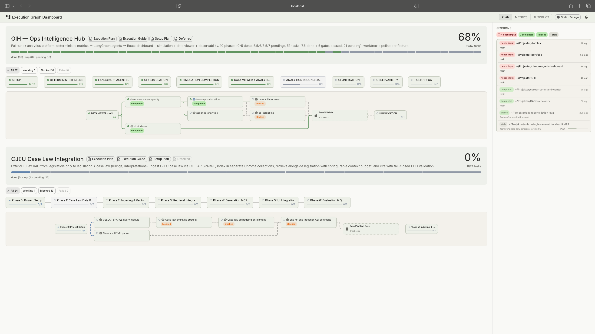

Claude Code Pipeline
The AI writes the code. Static analysis, test suites, and adversarial review decide if it's any good.
A process framework that lets one person handle what normally requires coordination across several roles, from requirements through QA, by structuring how AI agents work and how their output gets verified. For larger work, execution graphs coordinate multiple features through the pipeline with dependency ordering, cross-feature context, and mixed autonomy.
How it started
In autumn 2025 I started building with GitHub Copilot. Prompt, fix, prompt, fix. I tried Cursor, then settled on Claude Code. The pipeline grew from there: each frustration became a feature. Repetitive prompts became reusable commands. Drifting settings became a central config repo. Inconsistent QA became deterministic gates. Manual approvals on work that didn't need me became autopilot. None of it was planned upfront. Each project fed back into the pipeline, and the pipeline fed back into the next project.
What it does
Instead of ad-hoc prompting, the pipeline runs a structured development workflow. 13 core commands and 13 specialist AI agents handle the workflow: requirements, UX design, architecture, implementation, static analysis, manual testing, quality assurance, and deployment, backed by ~20 supporting commands for project planning, utilities, and shortcuts. Every phase produces committed artifacts. Every decision is traceable in git history.
For larger work, execution graphs break a project into dependency-ordered tasks, each running through the same pipeline independently, some unattended, some with human checkpoints.
Guardrails
AI agents with filesystem access need hard boundaries, not guidelines.
The pipeline's security model has three layers. At the kernel level, a
macOS Seatbelt sandbox restricts all file writes to the project directory
and /tmp. Credential paths like ~/.ssh and
~/.aws are blocked from reads entirely. At the application
level, permission deny rules prevent the AI from editing shell config,
its own settings, or credential files. At the git level, any tracked
file change is reversible. The boundaries hold regardless of what the
model does.
This is a solo setup, but the layers are the same ones any organisation will need when AI agents operate beyond a sandbox notebook: kernel-level containment (a macOS sandbox here, containers in a team setting), application-level policy, and version control as the reversibility guarantee.
How the workflow runs
In practice, the work splits like this:
- LLM handles: Requirements analysis, UX reasoning, architectural decisions, code generation, test writing, documentation
- Deterministic tools handle: Type checking (mypy, tsc), linting (ruff, eslint), code quality (SonarQube), test execution (pytest, vitest), formatting
- The pipeline enforces: TDD (write the failing test first, a pre-commit hook blocks violations), phase-gated commits, and an evaluator-optimizer loop where no agent marks its own work
The LLM can sound confident about broken code. The type checker doesn't care how confident it sounds. The whole system is built on that gap.
Two ways to run it
The commands are the same. How they're orchestrated differs:
- Flow mode. For work that needs human judgement: UI features, ambiguous requirements, anything where I want to review output before it propagates. I run
/start flow my-featurein a Claude Code session, it creates an isolated git worktree, and I move through phases conversationally, approving each one. - Autopilot mode. For backend work where the deterministic gates are sufficient. The entire pipeline runs unattended in tmux via
autopilot.sh. Same agents, same review cycles, same static analysis gates, but all human checkpoints auto-approved. This is one of the things the Agent Dashboard was built to monitor.
Individual commands also work standalone without the full pipeline, useful for hotfixes, documentation updates, or quick refactors where the ceremony is overkill.

Autopilot auto-approving a commit checkpoint. Tests pass, merge to main, cleanup.
Here's what a feature looks like going through the full pipeline:
Create isolated git worktree and feature branch.
Requirements and acceptance criteria. In flow mode, UX design and user flows are added. Five agents review independently. No hard gates, all creative work.
Module design, dependency ordering. Five specialist agents review the plan, fixer resolves findings, reviewers re-verify. Cycles until clean.
TDD: write the failing test first, then code, then refactor. Deterministic gates enter: ruff, mypy, tsc, SonarQube. LLM fixes what tools flag.
Human verifies in browser. Five agents review implementation. Deterministic gate: all tests pass or it doesn't ship.
Merge feature branch to main, push, clean up worktree. If the feature is part of an execution graph, update the plan to mark the task as complete.

Git log showing the audit trail. Every phase produces a traceable commit on the feature branch.
No agent marks its own work
The same evaluator-optimizer pattern runs in plan review (/team-review),
quality assurance (/team-qa), and project planning (/plan-project --team).
Specialist agents review independently, a separate fixer resolves their findings,
and the original reviewers run again to verify. The 13 agents span architect,
analyst, lead developer, security auditor, QA engineer, performance engineer,
UX designer, code reviewer, DevOps engineer, dependency auditor, test explorer,
fixer, and a canary for diagnostics. No agent ever approves its own fixes. If
mypy disagrees with the code, it doesn't matter how eloquently the agent argues
otherwise.
Every command knows what came before
Each phase runs in a fresh session. No conversation history carries over. Instead, each command loads exactly the committed artifacts it needs. This is context engineering applied to an agent harness: the pipeline controls what each agent sees, rather than letting context accumulate across a long conversation.
/implement reads the requirements and architecture plan.
/team-qa reads the full chain: what was required, what was
designed, what was built, and what static analysis found. But none of
them inherit the reasoning or mistakes from an earlier phase's session.
Every phase starts clean, with curated context from git.
Each command reads what was committed before it. The chain is cumulative: /team-qa sees everything from /ba through /static-analysis. No context is passed between commands manually. It's all in git.
Execution graphs: coordinating what a single pipeline can't
"Plans are worthless, but planning is everything." — Dwight D. Eisenhower, remarks to the National Defense Executive Reserve, 1957
The pipeline above handles one feature at a time. A real module might need a data layer, an API, business logic, and a UI, each depending on the others, each running through its own requirements-to-QA cycle.
Execution graphs are the coordination layer for this. Via /plan-project,
work gets broken into structured YAML plans with phases, tasks, dependency chains, and
quality gates. Each task is a feature that enters the pipeline independently. Tasks
within a phase can run in parallel. Tasks across phases respect dependency ordering.
Each task also carries an autopilot eligibility flag. Backend work with clear acceptance
criteria runs unattended, while UI work stays in flow mode with human checkpoints.
The same team-based review pattern applies here: /plan-project --team
brings up to eight specialist agents into the planning process itself, poking
at the scope and dependencies before any code is written.
I'm not naive about upfront planning. Nobody can predict everything at the start, and
detailed plans drift the moment they meet reality. But execution graphs are useful
for a different reason: they force me to think about scope, sequencing, and
dependencies before writing code. Even when the plan changes (and it will),
having made the plan reveals the right questions early. When reality does drift from
the plan, typically after a manual test phase that surfaces unexpected adjustments,
/plan-project --update reconciles the graph with what actually happened,
preserving completed work while re-sequencing what remains. The cost of replanning
is minutes, not days. That changes how willing I am to change direction mid-project.
A simplified example of what an execution graph looks like in practice:
All three run in parallel, no dependencies between them.
Sequential, each task unblocks the next.
Parallel, both need human review, so both run in flow mode.
Each task enters the full pipeline independently, /start through /commit. Tasks marked autopilot run unattended. Tasks marked flow pause for human checkpoints. The gate between phases must pass before downstream work begins.
Context flows across the graph
The execution graph doesn't just order tasks. It also controls what each
task knows about the others. When a task depends on completed work,
/ba and /ux automatically load the predecessor's
artifacts. If the data layer shipped before the UI layer starts,
/ba for the UI knows what the data layer promised and what
it actually delivered. /ux picks up the component patterns
and data schemas that were established.
This isn't implicit. The execution plan declares dependencies explicitly, and only completed dependencies are loaded. Three documents cross the boundary between features: what was promised, what was delivered, and what patterns were established. Implementation details stay inside the feature that built them.
Only three documents cross the feature boundary. The execution plan declares which dependencies to load. Implementation details stay encapsulated.
The execution graph also serves as the bridge to the Agent Dashboard. The dashboard's plan viewer renders the graph as a visual task tracker, showing which tasks are done, in progress, or blocked. For larger projects, the dashboard becomes less about monitoring individual autopilot runs and more about navigating the complexity of the overall plan: which phases are complete, what's blocked, where the project actually stands.

Execution graph rendered in the Agent Dashboard's plan viewer
Reflections
There's a maturity curve to working this way. Early on I wanted the pipeline close, human checkpoints on everything, full permission prompts, reviewing every output. As the setup matured and I saw enough cycles pass the gates cleanly, I started loosening the grip: broader permissions, lighter review modes, tasks flagged for autopilot. I didn't plan that progression. It happened because trust builds from evidence, and the pipeline generates evidence at every phase. Getting autopilot to work was a concrete example: the first version ran with every permission dangerously approved just to prove the flow could complete end-to-end. Then I narrowed it down, reviewing the logs to see what the pipeline actually needed, removing everything it didn't, until the permission surface matched the real requirements. Turns out it's easier to loosen a working system than to guess the right constraints upfront.
This works for a solo builder. Scaling it to a team would be a different problem. The principles carry over (phase gates, deterministic verification, no self-review), but the commands and agents are shaped around how I work, not how a team coordinates. The interesting part isn't the tooling. It's the underlying questions: how do I structure AI work so that output is verifiable? How do I build trust in autonomous processes incrementally? Where does human judgement add value, and where does it just add latency? Those questions don't change when the team gets bigger. The answers just get harder.
What went wrong
Autopilot went through two redesigns in about two days. The first version tried to scrape tmux terminal output to track what the pipeline was doing. I wanted the full history including hooks, permission prompts, everything. It kept breaking on ANSI escape codes and partial output. I went through many iterations trying to make it work before discovering that Claude Code already writes a structured log of every action it takes. Once I switched to reading that data, the core of autopilot came together quickly. Adding the non-Claude parts like phase transitions and dashboard integration was straightforward after that. The lesson was simple: I spent two days fighting scraped terminal text when the structured data was already there.
The command surface area grew organically as new needs appeared, and the supporting commands probably need consolidation. Sometimes the right engineering decision is to delete things, even things that work.
View on GitHub
tomashermansen-lang/claude-code-pipeline